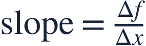
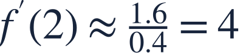

Estimating derivatives
도함수 추정
A table can estimate a derivative when no formula is given.
함수식이 없어도 표를 이용해 미분계수를 추정할 수 있습니다.
A table can estimate a derivative when no formula is given.
함수식이 없어도 표를 이용해 미분계수를 추정할 수 있습니다.

Use nearby points on opposite sides of the target input.
목표 입력의 양쪽에 있는 가까운 점들을 사용하세요.
| x | f(x) |
|---|---|
| 1.8 | 4.1 |
| 2.0 | 4.8 |
| 2.2 | 5.7 |
A centered secant uses information from both directions.
중앙 할선은 양쪽 방향의 정보를 함께 사용합니다.
Read the output change from the outer two rows.
양옆 두 행에서 출력의 변화량을 읽습니다.
Use the matching input interval, not just half of it.
대응하는 입력 구간 전체의 길이를 사용하세요.

This is an estimate in output units per input unit.
출력 단위를 입력 단위로 나눈 변화율의 추정값입니다.
Finite tabular data does not usually determine an exact derivative.
유한한 표만으로 정확한 도함수 값이 정해지지는 않습니다.
Estimate f′(2) using the outer two points.
양옆 두 점으로 f′(2)를 추정하세요.